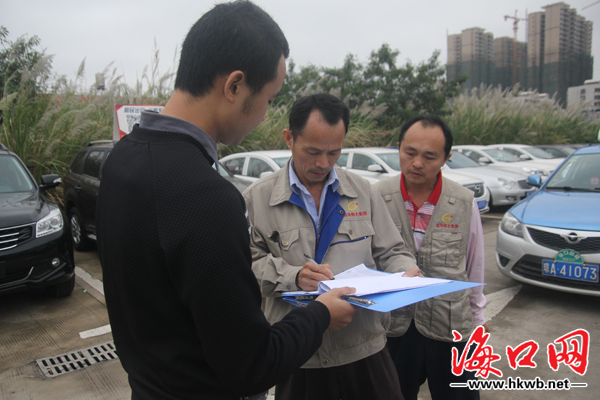
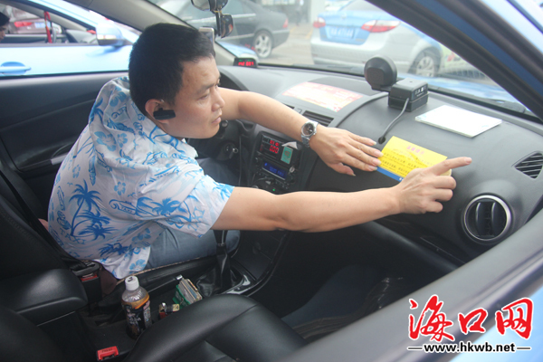

检查合格的司机签名。

见习记者高翔 摄影报道
要让更多的社区居民参与到"双创"工作中来，离不开一些"热心肠"的带动作用。在我市一些基层社区内，有这么一些普通的居民，自"双创"以来一直在尽自己的力量，为这座城市默默地奉献着。这些居民是如何助力"双创"的，通过他们的所想、所做，或许可以给大家带来一些启示。
退休老人为子孙树榜样
家住大同街道办义龙社区的陈强是一名转业军人，去年刚刚退休。今年7月31日起开始的"双创"，又让他忙活了起来。
为此，陈强主动来到社区居委会报名参加，在活动开展的近十天时间里，这支由陈强带队的退休人员组成的队伍在义龙路等路段进行全天候的文明督导行动，给摆摊商贩宣传"双创"文明理念，促进了辖区内占道经营现象的解决。
"'双创'的开展是海口百姓的一件幸事，这是一个实实在在的惠民工程。我们要做的就是以大局为重，去进行力所能及地配合和支持。"陈强说，他退休了，身体还不错，还可以为自己的社区出一份力，也算是给子孙做个榜样。
社区的事就是自己的事
家住金宇街道坡巷社区的林海轩是一名自由职业者，可支配的空闲时间比较多，他利用这些空闲时间参与到了社区开展的"双创"活动中，被坡巷社区居委会工作人员津津乐道。
在林海轩看来，既然自己有时间有精力，就应该主动参与"双创"。另外，遇到社区居委会进行卫生扫除活动时，林海轩也主动参与进来，同居委会工作人员一起劳动。
据坡巷社区网格员介绍，群众参与能够很好地促进社区很多工作的开展，有时候去劝导占道经营，能够更好地去沟通解决问题。"社区的事就是居民自己的事，我们都在这里生活，做一些工作也是应该的。"林海轩说。
在坡巷社区，有一家挂着"屯昌猪脚饭"招牌的早餐店，规模不大，却很受附近住户的欢迎，每天光顾的客人很多，老板朱开东也是这里的居民，和大家都熟识得很。
"双创"开展以来，朱开东的店内外环境卫生都有了明显改观，几位服务员只要看到有垃圾，就会马上清理。除了做好自己店的卫生，朱开东还主动参与社区发起的志愿活动，街道的清扫、小广告的清理，社区干部和网格员都对他赞赏有加。
在朱开东看来，发动群众进行卫生保洁很有必要，尤其是他们这些沿街商铺。对于"双创"工作，朱开东很支持，觉得环境整治好了，大家可以过得更幸福。他也建议今后应该持续宣传，"居民文明素质的提高就像这路面卫生一样，要反复进行宣传才能保持住，居民才能养成良好的卫生习惯。"
人人都能为"双创"出把力
"看到社区干部这么辛苦，在为改善我们的生活环境努力，我们这些老居民也应该行动起来。"家住府城街道办忠介社区绣衣坊的陈振荣谈起"双创"，感触颇多。
"双创"刚开始时，社区干部和居民每天早晚对辖区内店铺的门前"三包"进行巡查，打扫路面卫生，陈振荣就是其中的一员。"政府这次确实是下工夫在做'双创'，我们这些海口老市民看到了，更能感受得到，很支持。所以我也行动了起来，能做的工作做一下，协助居委会把我们的环境搞上去。"
在陈振荣看来，环境的干净整洁、市民文明程度的提高，对城市发展和人民生活都是好事。"我来做这个志愿者，一方面能够为社区建设出份力，同时也是想给孩子们做个榜样，让他们也能积极参与。"
海口网12月15日讯